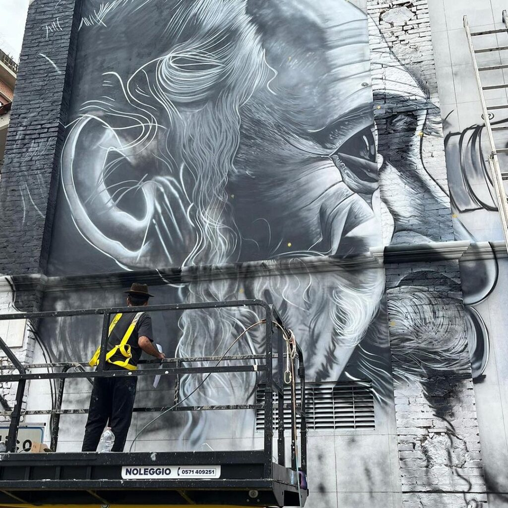
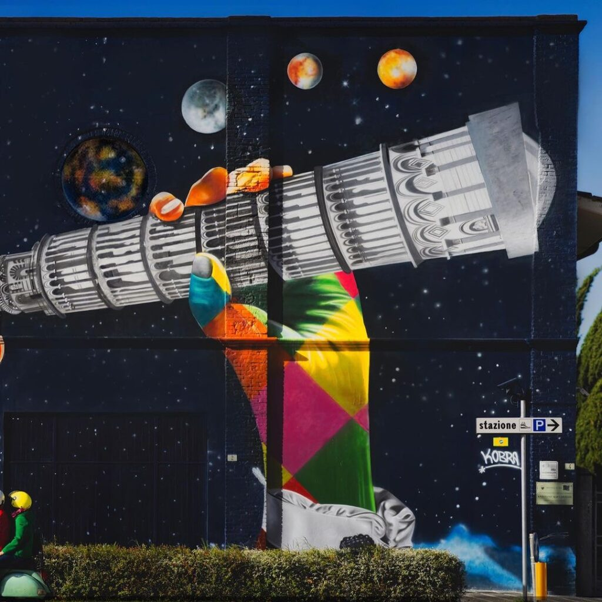
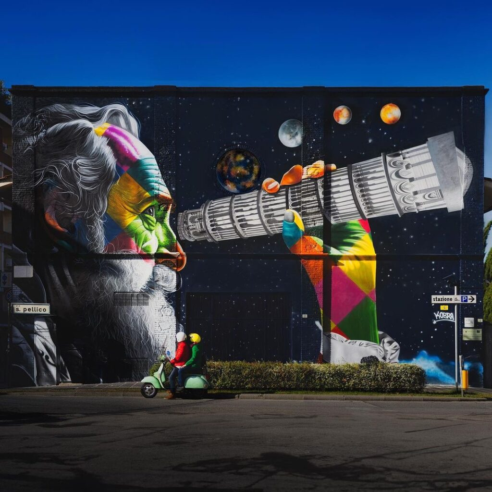

The year 2024 is quickly approaching, and with it come significant anniversaries for Pisa, Italy. The city is
gearing up to celebrate the 850th anniversary of the beginning of the construction of the Leaning Tower of Pisa and
the 460th anniversary of the birth of Galileo Galilei, the famous Italian astronomer and physicist born in Pisa.

In honour of these events, a beautiful mural was recently unveiled in Pisa, featuring Galileo using a telescope
shaped like the famous tower to observe the vastness of the universe. Galileo Galilei is an important figure in the
scientific community and a hero to many Italians. He is credited with pioneering the use of equipment for
astronomical observation and was the first to identify four natural satellites of Jupiter, known as the Galilean
moons. His contributions to science and astronomy have had a significant impact on our understanding of the
universe.

The mural, created by the renowned street artist Eduardo Kobra, is a beautiful tribute to Galileo and his work. In
the mural, he is depicted using a telescope shaped like the Leaning Tower of Pisa, which is a clever nod to both
anniversaries being celebrated in 2024. The artwork is a stunning display of talent and imagination and has been met
with much admiration from locals.

As we approach the year 2024, the people of Pisa are excited to celebrate their city's rich history and the
contributions of one of its most famous residents. The beautiful mural by Kobra is just one example of the many ways
in which the city honours its past and looks towards a bright future.

If you're planning a trip to Italy, be sure to include Pisa in your itinerary and take a moment to admire the
stunning mural in honour of Galileo Galilei by the talented Kobra.